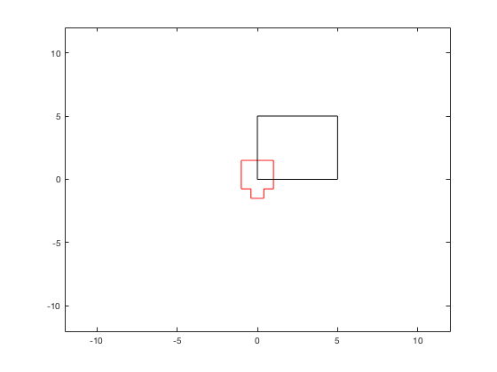
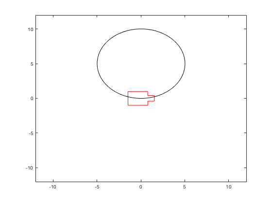
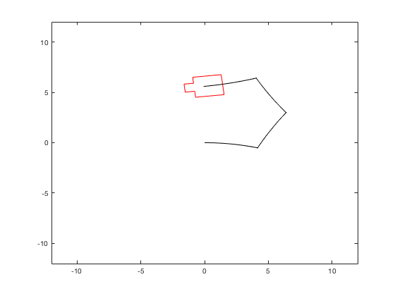
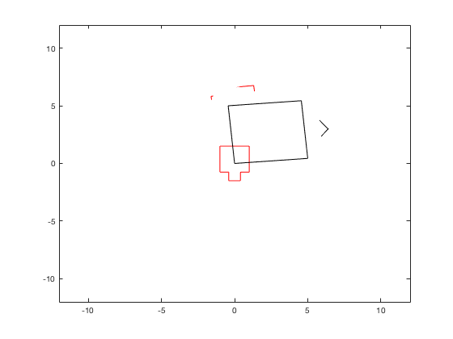
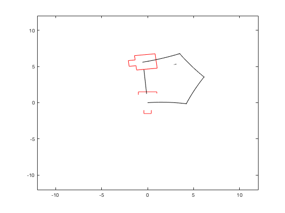
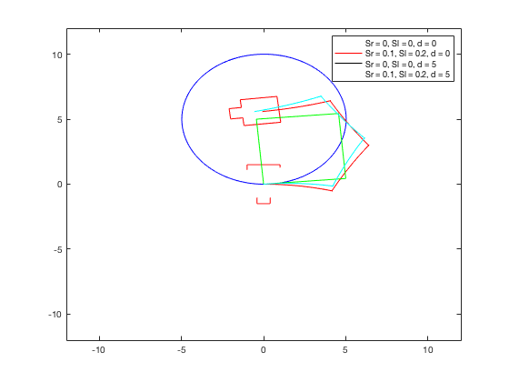

Contents
Homewrok Assignment #1
Student: Guilherme De Moura Araujo Professor: Stavros Vougioukas
close all; clear all; clc;
Part 1a - Drive through a square of 5x5
%INPUTS D = 5; v = 1; % linear velocity w = pi/2; % angular velocity wi = 2.0; % vehicle width r = 0.5; % wheel radius l = 3; % vehicle length dt = 0.05; % delta time sl = 0; %left slip sr = 0; % right sleep d = deg2rad(0); % delta (angle) x = 0; % initial x pose y = 0; % initial y pose theta = deg2rad(0); proute = [x,y]; tractor = draw_tractor(wi,l,r); % draw a vehicle element % initial conditions prior to start the open loop [oldframe,proute] = move_robot(tractor,proute,x,y,theta,tractor); xp = x; yp = y; thetap = theta; % Open loop for i=0:dt:D/v-dt %First side [xp,yp,thetap] = kinematic_ss(v,0,r,wi,dt,sl,sr,d,xp,yp,thetap); [oldframe,proute] = move_robot(oldframe,proute,xp,yp,thetap,tractor); end for i=0:dt:(pi/2)/w-dt %Vehicle turning [xp,yp,thetap] = kinematic_ss(0,w,r,wi,dt,sl,sr,d,xp,yp,thetap); [oldframe,proute] = move_robot(oldframe,proute,xp,yp,thetap,tractor); end for i=0:dt:D/v-dt %Second side (notice that now theta = 90) [xp,yp,thetap] = kinematic_ss(v,0,r,l,dt,sl,sr,d,xp,yp,thetap); [oldframe,proute] = move_robot(oldframe,proute,xp,yp,thetap,tractor); end for i=0:dt:(pi/2)/w-dt %Vehicle turning [xp,yp,thetap] = kinematic_ss(0,w,r,wi,dt,sl,sr,d,xp,yp,thetap); [oldframe,proute] = move_robot(oldframe,proute,xp,yp,thetap,tractor); end for i=0:dt:D/v-dt %Third side (theta = 180) [xp,yp,thetap] = kinematic_ss(v,0,r,l,dt,sl,sr,d,xp,yp,thetap); [oldframe,proute] = move_robot(oldframe,proute,xp,yp,thetap,tractor); end for i=0:dt:(pi/2)/w-dt %Vehicle turning [xp,yp,thetap] = kinematic_ss(0,w,r,wi,dt,sl,sr,d,xp,yp,thetap); [oldframe,proute] = move_robot(oldframe,proute,xp,yp,thetap,tractor); end for i=0:dt:D/v-dt %Third side (theta = 270) [xp,yp,thetap] = kinematic_ss(v,0,r,l,dt,sl,sr,d,xp,yp,thetap); [oldframe,proute] = move_robot(oldframe,proute,xp,yp,thetap,tractor); end
Part 1b - Drive through a circle of radius 5
%INPUTS clear all; clc; v = 1; % m/s R = 5; % meters w = v/R; % radians/s r = 0.5; % m l = 3; % m wi = 2; % m dt = 0.05; % s sl = 0; % 0% sr = 0; % 0% d = deg2rad(0); % rad x = 0; % m y = 0; % m theta = deg2rad(0); % rad proute = [x,y]; tractor = draw_tractor(wi,l,r); [oldframe,proute] = move_robot(tractor,proute,x,y,theta,tractor); xp = x; yp = y; thetap = theta; for i=0:dt:2*pi/w % Distance = 2pi, t = d/w [xp,yp,thetap] = kinematic_ss(v,w,r,l,dt,sl,sr,d,xp,yp,thetap); [oldframe,proute] = move_robot(oldframe,proute,xp,yp,thetap,tractor); end
Exception in thread "AWT-EventQueue-0": java.lang.ClassCastException: javax.swing.plaf.basic.BasicComboBoxUI cannot be cast to com.jidesoft.plaf.ExComboBoxUI at com.jidesoft.grid.JideTable.removeEditor(Unknown Source) at com.jidesoft.grid.JideTable.editingStopped(Unknown Source) at javax.swing.AbstractCellEditor.fireEditingStopped(AbstractCellEditor.java:141) at javax.swing.AbstractCellEditor.stopCellEditing(AbstractCellEditor.java:85) at com.jidesoft.grid.ExComboBoxCellEditor.stopCellEditing(Unknown Source) at com.jidesoft.grid.ExComboBoxCellEditor.actionPerformed(Unknown Source) at javax.swing.JComboBox.fireActionEvent(JComboBox.java:1258) at com.jidesoft.combobox.ExComboBox.fireActionEvent(Unknown Source) at com.jidesoft.combobox.ExComboBox.setSelectedItem(Unknown Source) at com.jidesoft.combobox.ExComboBox.setSelectedItem(Unknown Source) at javax.swing.JComboBox.setSelectedIndex(JComboBox.java:622) at javax.swing.plaf.basic.BasicComboPopup$Handler.mouseReleased(BasicComboPopup.java:868) at java.awt.AWTEventMulticaster.mouseReleased(AWTEventMulticaster.java:290) at java.awt.Component.processMouseEvent(Component.java:6539) at javax.swing.JComponent.processMouseEvent(JComponent.java:3324) at javax.swing.plaf.basic.BasicComboPopup$1.processMouseEvent(BasicComboPopup.java:517) at java.awt.Component.processEvent(Component.java:6304) at java.awt.Container.processEvent(Container.java:2239) at java.awt.Component.dispatchEventImpl(Component.java:4889) at java.awt.Container.dispatchEventImpl(Container.java:2297) at java.awt.Component.dispatchEvent(Component.java:4711) at java.awt.LightweightDispatcher.retargetMouseEvent(Container.java:4904) at java.awt.LightweightDispatcher.processMouseEvent(Container.java:4535) at java.awt.LightweightDispatcher.dispatchEvent(Container.java:4476) at java.awt.Container.dispatchEventImpl(Container.java:2283) at java.awt.Window.dispatchEventImpl(Window.java:2746) at java.awt.Component.dispatchEvent(Component.java:4711) at java.awt.EventQueue.dispatchEventImpl(EventQueue.java:760) at java.awt.EventQueue.access$500(EventQueue.java:97) at java.awt.EventQueue$3.run(EventQueue.java:709) at java.awt.EventQueue$3.run(EventQueue.java:703) at java.security.AccessController.doPrivileged(Native Method) at java.security.ProtectionDomain$JavaSecurityAccessImpl.doIntersectionPrivilege(ProtectionDomain.java:74) at java.security.ProtectionDomain$JavaSecurityAccessImpl.doIntersectionPrivilege(ProtectionDomain.java:84) at java.awt.EventQueue$4.run(EventQueue.java:733) at java.awt.EventQueue$4.run(EventQueue.java:731) at java.security.AccessController.doPrivileged(Native Method) at java.security.ProtectionDomain$JavaSecurityAccessImpl.doIntersectionPrivilege(ProtectionDomain.java:74) at java.awt.EventQueue.dispatchEvent(EventQueue.java:730) at java.awt.EventDispatchThread.pumpOneEventForFilters(EventDispatchThread.java:205) at java.awt.EventDispatchThread.pumpEventsForFilter(EventDispatchThread.java:116) at java.awt.EventDispatchThread.pumpEventsForHierarchy(EventDispatchThread.java:105) at java.awt.EventDispatchThread.pumpEvents(EventDispatchThread.java:101) at java.awt.EventDispatchThread.pumpEvents(EventDispatchThread.java:93) at java.awt.EventDispatchThread.run(EventDispatchThread.java:82) Exception in thread "AWT-EventQueue-0": java.lang.ClassCastException: javax.swing.plaf.basic.BasicComboBoxUI cannot be cast to com.jidesoft.plaf.ExComboBoxUI at com.jidesoft.grid.JideTable.removeEditor(Unknown Source) at com.jidesoft.grid.JideTable.editingStopped(Unknown Source) at javax.swing.AbstractCellEditor.fireEditingStopped(AbstractCellEditor.java:141) at javax.swing.AbstractCellEditor.stopCellEditing(AbstractCellEditor.java:85) at com.jidesoft.grid.ExComboBoxCellEditor.stopCellEditing(Unknown Source) at javax.swing.plaf.basic.BasicTableUI$Handler.mousePressed(BasicTableUI.java:1010) at javax.swing.plaf.basic.BasicTableUI$MouseInputHandler.mousePressed(BasicTableUI.java:798) at com.jidesoft.swing.DelegateMouseInputListener.mousePressed(Unknown Source) at java.awt.AWTEventMulticaster.mousePressed(AWTEventMulticaster.java:280) at java.awt.Component.processMouseEvent(Component.java:6536) at javax.swing.JComponent.processMouseEvent(JComponent.java:3324) at java.awt.Component.processEvent(Component.java:6304) at java.awt.Container.processEvent(Container.java:2239) at java.awt.Component.dispatchEventImpl(Component.java:4889) at java.awt.Container.dispatchEventImpl(Container.java:2297) at java.awt.Component.dispatchEvent(Component.java:4711) at java.awt.LightweightDispatcher.retargetMouseEvent(Container.java:4904) at java.awt.LightweightDispatcher.processMouseEvent(Container.java:4532) at java.awt.LightweightDispatcher.dispatchEvent(Container.java:4476) at java.awt.Container.dispatchEventImpl(Container.java:2283) at java.awt.Window.dispatchEventImpl(Window.java:2746) at java.awt.Component.dispatchEvent(Component.java:4711) at java.awt.EventQueue.dispatchEventImpl(EventQueue.java:760) at java.awt.EventQueue.access$500(EventQueue.java:97) at java.awt.EventQueue$3.run(EventQueue.java:709) at java.awt.EventQueue$3.run(EventQueue.java:703) at java.security.AccessController.doPrivileged(Native Method) at java.security.ProtectionDomain$JavaSecurityAccessImpl.doIntersectionPrivilege(ProtectionDomain.java:74) at java.security.ProtectionDomain$JavaSecurityAccessImpl.doIntersectionPrivilege(ProtectionDomain.java:84) at java.awt.EventQueue$4.run(EventQueue.java:733) at java.awt.EventQueue$4.run(EventQueue.java:731) at java.security.AccessController.doPrivileged(Native Method) at java.security.ProtectionDomain$JavaSecurityAccessImpl.doIntersectionPrivilege(ProtectionDomain.java:74) at java.awt.EventQueue.dispatchEvent(EventQueue.java:730) at java.awt.EventDispatchThread.pumpOneEventForFilters(EventDispatchThread.java:205) at java.awt.EventDispatchThread.pumpEventsForFilter(EventDispatchThread.java:116) at java.awt.EventDispatchThread.pumpEventsForHierarchy(EventDispatchThread.java:105) at java.awt.EventDispatchThread.pumpEvents(EventDispatchThread.java:101) at java.awt.EventDispatchThread.pumpEvents(EventDispatchThread.java:93) at java.awt.EventDispatchThread.run(EventDispatchThread.java:82) Exception in thread "AWT-EventQueue-0": java.lang.ClassCastException: javax.swing.plaf.basic.BasicComboBoxUI cannot be cast to com.jidesoft.plaf.ExComboBoxUI at com.jidesoft.grid.JideTable.removeEditor(Unknown Source) at com.jidesoft.grid.JideTable.editingStopped(Unknown Source) at javax.swing.AbstractCellEditor.fireEditingStopped(AbstractCellEditor.java:141) at javax.swing.AbstractCellEditor.stopCellEditing(AbstractCellEditor.java:85) at com.jidesoft.grid.ExComboBoxCellEditor.stopCellEditing(Unknown Source) at com.jidesoft.grid.JideTable$s_.propertyChange(Unknown Source) at java.beans.PropertyChangeSupport.fire(PropertyChangeSupport.java:335) at java.beans.PropertyChangeSupport.firePropertyChange(PropertyChangeSupport.java:328) at java.beans.PropertyChangeSupport.firePropertyChange(PropertyChangeSupport.java:263) at java.awt.KeyboardFocusManager.firePropertyChange(KeyboardFocusManager.java:1493) at java.awt.KeyboardFocusManager.setGlobalPermanentFocusOwner(KeyboardFocusManager.java:780) at java.awt.DefaultKeyboardFocusManager.dispatchEvent(DefaultKeyboardFocusManager.java:616) at java.awt.Component.dispatchEventImpl(Component.java:4760) at java.awt.Container.dispatchEventImpl(Container.java:2297) at java.awt.Component.dispatchEvent(Component.java:4711) at java.awt.EventQueue.dispatchEventImpl(EventQueue.java:760) at java.awt.EventQueue.access$500(EventQueue.java:97) at java.awt.EventQueue$3.run(EventQueue.java:709) at java.awt.EventQueue$3.run(EventQueue.java:703) at java.security.AccessController.doPrivileged(Native Method) at java.security.ProtectionDomain$JavaSecurityAccessImpl.doIntersectionPrivilege(ProtectionDomain.java:74) at java.security.ProtectionDomain$JavaSecurityAccessImpl.doIntersectionPrivilege(ProtectionDomain.java:84) at java.awt.EventQueue$4.run(EventQueue.java:733) at java.awt.EventQueue$4.run(EventQueue.java:731) at java.security.AccessController.doPrivileged(Native Method) at java.security.ProtectionDomain$JavaSecurityAccessImpl.doIntersectionPrivilege(ProtectionDomain.java:74) at java.awt.EventQueue.dispatchEvent(EventQueue.java:730) at java.awt.EventDispatchThread.pumpOneEventForFilters(EventDispatchThread.java:205) at java.awt.EventDispatchThread.pumpEventsForFilter(EventDispatchThread.java:116) at java.awt.EventDispatchThread.pumpEventsForHierarchy(EventDispatchThread.java:105) at java.awt.EventDispatchThread.pumpEvents(EventDispatchThread.java:101) at java.awt.EventDispatchThread.pumpEvents(EventDispatchThread.java:93) at java.awt.EventDispatchThread.run(EventDispatchThread.java:82) Exception in thread "AWT-EventQueue-0": java.lang.ClassCastException: javax.swing.plaf.basic.BasicComboBoxUI cannot be cast to com.jidesoft.plaf.ExComboBoxUI at com.jidesoft.grid.JideTable.removeEditor(Unknown Source) at com.jidesoft.grid.JideTable.editingStopped(Unknown Source) at javax.swing.AbstractCellEditor.fireEditingStopped(AbstractCellEditor.java:141) at javax.swing.AbstractCellEditor.stopCellEditing(AbstractCellEditor.java:85) at com.jidesoft.grid.ExComboBoxCellEditor.stopCellEditing(Unknown Source) at com.jidesoft.grid.JideTable$s_.propertyChange(Unknown Source) at java.beans.PropertyChangeSupport.fire(PropertyChangeSupport.java:335) at java.beans.PropertyChangeSupport.firePropertyChange(PropertyChangeSupport.java:328) at java.beans.PropertyChangeSupport.firePropertyChange(PropertyChangeSupport.java:263) at java.awt.KeyboardFocusManager.firePropertyChange(KeyboardFocusManager.java:1493) at java.awt.KeyboardFocusManager.setGlobalPermanentFocusOwner(KeyboardFocusManager.java:780) at java.awt.DefaultKeyboardFocusManager.dispatchEvent(DefaultKeyboardFocusManager.java:616) at java.awt.Component.dispatchEventImpl(Component.java:4760) at java.awt.Container.dispatchEventImpl(Container.java:2297) at java.awt.Component.dispatchEvent(Component.java:4711) at java.awt.EventQueue.dispatchEventImpl(EventQueue.java:760) at java.awt.EventQueue.access$500(EventQueue.java:97) at java.awt.EventQueue$3.run(EventQueue.java:709) at java.awt.EventQueue$3.run(EventQueue.java:703) at java.security.AccessController.doPrivileged(Native Method) at java.security.ProtectionDomain$JavaSecurityAccessImpl.doIntersectionPrivilege(ProtectionDomain.java:74) at java.security.ProtectionDomain$JavaSecurityAccessImpl.doIntersectionPrivilege(ProtectionDomain.java:84) at java.awt.EventQueue$4.run(EventQueue.java:733) at java.awt.EventQueue$4.run(EventQueue.java:731) at java.security.AccessController.doPrivileged(Native Method) at java.security.ProtectionDomain$JavaSecurityAccessImpl.doIntersectionPrivilege(ProtectionDomain.java:74) at java.awt.EventQueue.dispatchEvent(EventQueue.java:730) at java.awt.EventDispatchThread.pumpOneEventForFilters(EventDispatchThread.java:205) at java.awt.EventDispatchThread.pumpEventsForFilter(EventDispatchThread.java:116) at java.awt.EventDispatchThread.pumpEventsForHierarchy(EventDispatchThread.java:105) at java.awt.EventDispatchThread.pumpEvents(EventDispatchThread.java:101) at java.awt.EventDispatchThread.pumpEvents(EventDispatchThread.java:93) at java.awt.EventDispatchThread.run(EventDispatchThread.java:82)
Part 2a - Different parameters
D = 5; v = 1; % linear velocity w = pi/2; % angular velocity wi = 2.0; % vehicle width r = 0.5; % wheel radius l = 3; % vehicle length dt = 0.05; % delta time sl = 0.1; %left slip sr = 0.2; % right sleep d = deg2rad(0); % delta (angle) x = 0; % initial x pose y = 0; % initial y pose theta = deg2rad(0); proute2 = [x,y]; tractor = draw_tractor(wi,l,r); % draw a vehicle element % initial conditions prior to start the open loop [oldframe,proute2] = move_robot(tractor,proute2,x,y,theta,tractor); xp = x; yp = y; thetap = theta; % Open loop for i=0:dt:D/v-dt %First side [xp,yp,thetap] = kinematic_ss(v,0,r,wi,dt,sl,sr,d,xp,yp,thetap); [oldframe,proute2] = move_robot(oldframe,proute2,xp,yp,thetap,tractor); end for i=0:dt:(pi/2)/w-dt %Vehicle turning [xp,yp,thetap] = kinematic_ss(0,w,r,wi,dt,sl,sr,d,xp,yp,thetap); [oldframe,proute2] = move_robot(oldframe,proute2,xp,yp,thetap,tractor); end for i=0:dt:D/v-dt %Second side (notice that now theta = 90) [xp,yp,thetap] = kinematic_ss(v,0,r,l,dt,sl,sr,d,xp,yp,thetap); [oldframe,proute2] = move_robot(oldframe,proute2,xp,yp,thetap,tractor); end for i=0:dt:(pi/2)/w-dt %Vehicle turning [xp,yp,thetap] = kinematic_ss(0,w,r,wi,dt,sl,sr,d,xp,yp,thetap); [oldframe,proute2] = move_robot(oldframe,proute2,xp,yp,thetap,tractor); end for i=0:dt:D/v-dt %Third side (theta = 180) [xp,yp,thetap] = kinematic_ss(v,0,r,l,dt,sl,sr,d,xp,yp,thetap); [oldframe,proute2] = move_robot(oldframe,proute2,xp,yp,thetap,tractor); end for i=0:dt:(pi/2)/w-dt %Vehicle turning [xp,yp,thetap] = kinematic_ss(0,w,r,wi,dt,sl,sr,d,xp,yp,thetap); [oldframe,proute2] = move_robot(oldframe,proute2,xp,yp,thetap,tractor); end for i=0:dt:D/v-dt %Fourth side (theta = 270) [xp,yp,thetap] = kinematic_ss(v,0,r,l,dt,sl,sr,d,xp,yp,thetap); [oldframe,proute2] = move_robot(oldframe,proute2,xp,yp,thetap,tractor); end
Part 2b
D = 5; v = 1; % linear velocity w = pi/2; % angular velocity wi = 2.0; % vehicle width r = 0.5; % wheel radius l = 3; % vehicle length dt = 0.05; % delta time sl = 0.0; %left slip sr = 0.0; % right sleep d = deg2rad(5); % delta (angle) x = 0; % initial x pose y = 0; % initial y pose theta = deg2rad(0); proute3 = [x,y]; tractor = draw_tractor(wi,l,r); % draw a vehicle element % initial conditions prior to start the open loop [oldframe,proute3] = move_robot(tractor,proute3,x,y,theta,tractor); xp = x; yp = y; thetap = theta; % Open loop for i=0:dt:D/v-dt %First side [xp,yp,thetap] = kinematic_ss(v,0,r,wi,dt,sl,sr,d,xp,yp,thetap); [oldframe,proute3] = move_robot(oldframe,proute3,xp,yp,thetap,tractor); end for i=0:dt:(pi/2)/w-dt %Vehicle turning [xp,yp,thetap] = kinematic_ss(0,w,r,wi,dt,sl,sr,d,xp,yp,thetap); [oldframe,proute3] = move_robot(oldframe,proute3,xp,yp,thetap,tractor); end for i=0:dt:D/v-dt %Second side (notice that now theta = 90) [xp,yp,thetap] = kinematic_ss(v,0,r,l,dt,sl,sr,d,xp,yp,thetap); [oldframe,proute3] = move_robot(oldframe,proute3,xp,yp,thetap,tractor); end for i=0:dt:(pi/2)/w-dt %Vehicle turning [xp,yp,thetap] = kinematic_ss(0,w,r,wi,dt,sl,sr,d,xp,yp,thetap); [oldframe,proute3] = move_robot(oldframe,proute3,xp,yp,thetap,tractor); end for i=0:dt:D/v-dt %Third side (theta = 180) [xp,yp,thetap] = kinematic_ss(v,0,r,l,dt,sl,sr,d,xp,yp,thetap); [oldframe,proute3] = move_robot(oldframe,proute3,xp,yp,thetap,tractor); end for i=0:dt:(pi/2)/w-dt %Vehicle turning [xp,yp,thetap] = kinematic_ss(0,w,r,wi,dt,sl,sr,d,xp,yp,thetap); [oldframe,proute3] = move_robot(oldframe,proute3,xp,yp,thetap,tractor); end for i=0:dt:D/v-dt %Fourth side (theta = 270) [xp,yp,thetap] = kinematic_ss(v,0,r,l,dt,sl,sr,d,xp,yp,thetap); [oldframe,proute3] = move_robot(oldframe,proute3,xp,yp,thetap,tractor); end
Part 2c
D = 5; v = 1; % linear velocity w = pi/2; % angular velocity wi = 2.0; % vehicle width r = 0.5; % wheel radius l = 3; % vehicle length dt = 0.05; % delta time sl = 0.1; %left slip sr = 0.2; % right sleep d = deg2rad(5); % delta (angle) x = 0; % initial x pose y = 0; % initial y pose theta = deg2rad(0); proute4 = [x,y]; tractor = draw_tractor(wi,l,r); % draw a vehicle element % initial conditions prior to start the open loop [oldframe,proute4] = move_robot(tractor,proute4,x,y,theta,tractor); xp = x; yp = y; thetap = theta; % Open loop for i=0:dt:D/v-dt %First side [xp,yp,thetap] = kinematic_ss(v,0,r,wi,dt,sl,sr,d,xp,yp,thetap); [oldframe,proute4] = move_robot(oldframe,proute4,xp,yp,thetap,tractor); end for i=0:dt:(pi/2)/w-dt %Vehicle turning [xp,yp,thetap] = kinematic_ss(0,w,r,wi,dt,sl,sr,d,xp,yp,thetap); [oldframe,proute4] = move_robot(oldframe,proute4,xp,yp,thetap,tractor); end for i=0:dt:D/v-dt %Second side (notice that now theta = 90) [xp,yp,thetap] = kinematic_ss(v,0,r,l,dt,sl,sr,d,xp,yp,thetap); [oldframe,proute4] = move_robot(oldframe,proute4,xp,yp,thetap,tractor); end for i=0:dt:(pi/2)/w-dt %Vehicle turning [xp,yp,thetap] = kinematic_ss(0,w,r,wi,dt,sl,sr,d,xp,yp,thetap); [oldframe,proute4] = move_robot(oldframe,proute4,xp,yp,thetap,tractor); end for i=0:dt:D/v-dt %Third side (theta = 180) [xp,yp,thetap] = kinematic_ss(v,0,r,l,dt,sl,sr,d,xp,yp,thetap); [oldframe,proute4] = move_robot(oldframe,proute4,xp,yp,thetap,tractor); end for i=0:dt:(pi/2)/w-dt %Vehicle turning [xp,yp,thetap] = kinematic_ss(0,w,r,wi,dt,sl,sr,d,xp,yp,thetap); [oldframe,proute4] = move_robot(oldframe,proute4,xp,yp,thetap,tractor); end for i=0:dt:D/v-dt %Fourth side (theta = 270) [xp,yp,thetap] = kinematic_ss(v,0,r,l,dt,sl,sr,d,xp,yp,thetap); [oldframe,proute4] = move_robot(oldframe,proute4,xp,yp,thetap,tractor); end
PLOTS
plot(proute(:,1),proute(:,2),'b-') hold on plot(proute2(:,1),proute2(:,2),'r-') plot(proute3(:,1),proute3(:,2),'g-') plot(proute4(:,1),proute4(:,2),'c-') legend('Sr = 0, Sl = 0, d = 0','Sr = 0.1, Sl = 0.2, d = 0','Sr = 0, Sl = 0, d = 5','Sr = 0.1, Sl = 0.2, d = 5')